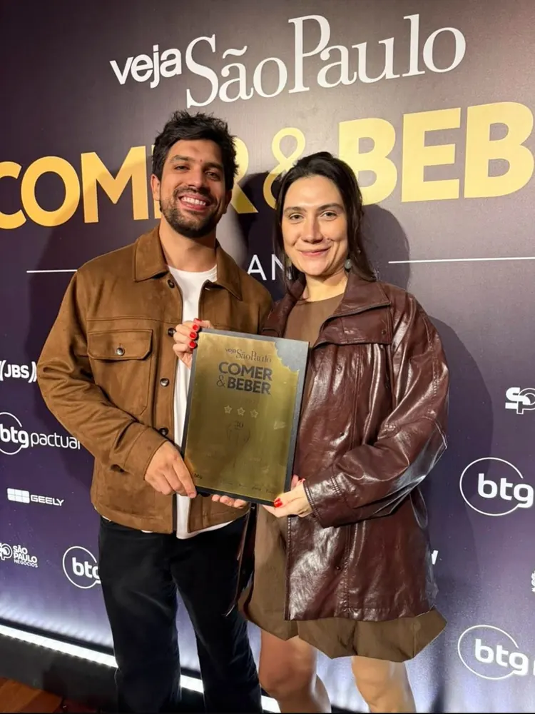

Elea Forneria na imprensa · Comer & Beber 2025 e 2026 · Melhor Trattoria
Bicampeã: melhor trattoria de São Paulo

Pelo segundo ano consecutivo, a Elea foi eleita a melhor trattoria pela Veja São Paulo Comer & Beber, nas edições 2025 e 2026.
Da casa · conteúdo da Elea
Quem faz a Elea


À frente da casa estão os irmãos e sócios Enrico Villela, chef da cozinha, e Manuela Fernandes, sommelière.
Enrico comanda a cozinha da Elea: massas frescas, pizzas de forno e pratos para dividir. Manuela assina a carta de vinhos, pensada para acompanhar as massas, as pizzas e os pratos da casa.
Um sonho italiano na Zona Norte. A Elea Forneria nasceu na Água Fria do desejo de compartilhar a paixão pela cozinha italiana.
Trattoria